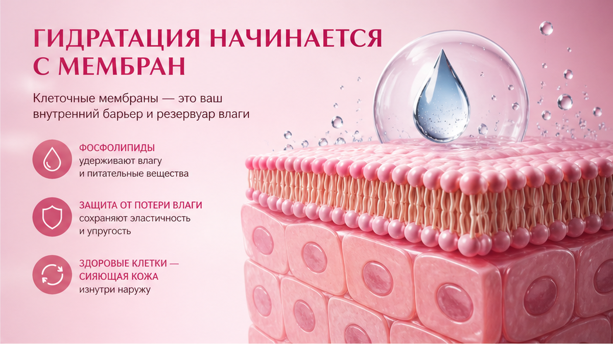
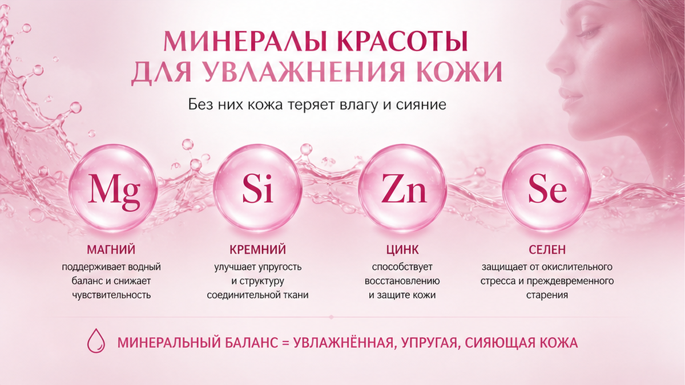
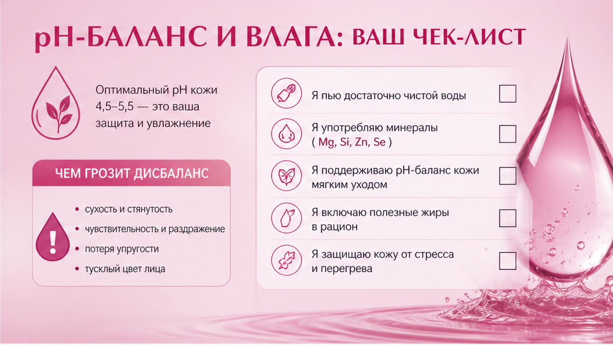

Как увлажнить кожу изнутри — не тем, что вы заливаете два литра и ждёте сияния. Влага в клетках держится на мембранах, минералах и уходе снаружи. Ниже — почему «норма воды» часто не работает для лица, что добавить без фанатизма и протокол на 7 дней.
Вы пьёте по графику, а щёки всё равно стянуты к вечеру? Часто проблема не в количестве воды, а в том, доходит ли она до клеток кожи и удерживается ли там.
Разберём, почему два литра не равны увлажнению кожи, как работают мембраны, зачем минералы и pH, и дам простой план на неделю — для женщин 40+.
«Елена, я пью 2 литра. Крем дорогой. Почему лицо как пергамент?»
Спрашиваю не про литры, а про стул, кофе, сон и что на полке.
И почти всегда картина одна.
Вода в стакане — да.
А в клетках кожи — нет.
Это не значит, что пить не нужно.
Это значит, что одной воды мало.

Организм не заливает кожу как цветок из лейки.
Вода идёт в кровь, почки, лимфу, органы.
К коже — то, что осталось после приоритетов.
Клиентки часто показывают бутылку с маркерами «осталось 600 мл».
Я спрашиваю: «А крем на ночь нанесли?» — «Забыла, устала».
Вот где ломается увлажнение.
Вода без барьера — как полив без земли.
Механизм. Кожа — не первый получатель. Сначала мозг, сердце, почки. Если вы в хроническом стрессе или мало спите, тело экономит влагу не там, где вы смотрите в зеркало.
❌ Мифы:
✅ Что реально влияет:
Если уход хаотичный — начните с типичных ошибок в уходе, иначе вода не компенсирует.
Многие путают «пить достаточно» и «кожа увлажнена».
Достаточно — для почек.
Увлажнена — когда клетка держит воду внутри.
Это разные задачи.
Если вы уже пьёте нормально, но лицо сухое — копайте барьер, а не литраж.
Об этом ниже.

Клетка держит воду, если мембрана целая.
Мембрана на 70–80% из липидов — жиров.
Не из стакана воды.
Когда мембрана «дырявая», клетка сморщивается — вы видите шелушение и мелкую сетку.
Откуда дырки:
Крем увлажняет поверхность.
Мембраны «кормятся» изнутри: белок, жиры, микроэлементы.
Для сухой ватной доши это особенно заметно — вода уходит быстрее.
Представьте губку.
Сухая губка не впитывает лейку за минуту.
Её нужно смочить снаружи и дать структуре восстановиться.
Так же с барьером кожи.
💡 Увлажнённость — не «мокрая» кожа. Это клетки, которые держат воду внутри, а не на поверхности.

Электролиты помогают воде попасть в клетку: натрий, калий, магний в балансе.
Не нужны таблетки «наугад».
Достаточно простых вещей.
Минералы на практике:
pH кожи — около 4,5–5,5. Жёсткая вода и щёлочное мыло поднимают pH, барьер страдает.
После умывания кожа не должна «скрипеть».
Если скрипит — барьер восстанавливается дольше, чем вы пьёте литры.
Сделайте: умягчите умывание — мягкий гель. Не делайте: умываться только жёсткой водой из-под крана, если кожа стянута после.
Тип кожи и триггеры — диагностика кожи поможет не гадать.
| Симптом | Частая причина | Мягкое действие |
|---|---|---|
| Стянутость после умывания | Жёсткая вода, щёлочь | Мягкий гель + крем на влажную кожу |
| Шелушение к вечеру | Слабый барьер | Липиды в уходе + жиры в еде |
| Отёк + сухость | Мало минералов, много соли | Баланс воды, зелень, лимфа |
| Горячие щёки | стресс + кофе натощак | Вода после еды, SPF, прохлада |
Не считаем литры в истерике. Смотрим на самочувствие и кожу к вечеру.
Миниплан.
Каждое утро: стакан воды после подъёма + SPF.
Каждый день: пить по жажде, не заливать; кофе — после еды.
Каждый вечер: очищение + один увлажняющий продукт + 5 минут лимфы.
Если за неделю изменилась только вода, а уход нет — эффект будет слабый.
Работает связка: изнутри (жиры, минералы) + снаружи (барьер).
На второй неделе не добавляйте пять новых средств.
Закрепите то, что дало комфорт.
Чеклист на 14 дней.
Не менять: весь набор косметики за раз.
Добавить: один источник жиров в день.
Убрать: одно агрессивное очищение.
Контроль: фото раз в 5 дней, один ракурс.
Если к вечеру лицо комфортнее — вы на верном пути.
Не ждите «стеклянной кожи» за три дня.
Ждите меньше стянутости — это реальный маркер.
После 40 барьер тоньше — это нормальная физиология, не «вы не пьёте».
Поэтому связка вода + липиды + SPF работает лучше, чем любой детокс-челлендж с литрами.
Не наказывайте себя стаканами.
Настройте систему на 14 дней и смотрите на комфорт к вечеру.
❌ Что сушит:
✅ Что помогает:
На консультациях вижу: женщина пьёт 2,5 литра и ест «салатик без масла». Кожа сухая.
Добавляем жиры и упрощаем уход — через 10 дней лицо мягче.
Не магия.
Барьер восстановился.
Ещё одна ловушка — приложения «выпей ещё 300 мл».
Вы пьёте механически, а кожа не меняется — и кажется, что «вода не работает».
Работает связка, не галочка.
Пара слов про привычки, которые сушат лицо: мало сна и стресс бьют по барьеру сильнее, чем минус одного стакана воды.
Сначала сон и мягкий уход — потом гонка за литрами.
Вода — условие. Увлажнение кожи — результат работы клетки и ухода, а не счётчик в телефоне.
Миниплан на вечер (5 минут).
Умылись мягко. Не терли полотенцем до красноты.
На влажную кожу — один слой ухода.
Три прохода лимфы: от центра лица к ушам, без давления.
Стакан воды — если хочется, не «допей до нормы».
Так барьер и сон работают вместе, а не против воды.
И последнее: увлажнение лица и тела — разные скорости.
Руки могут быть мягкими, а щёки стянуты — значит, барьер лица слабее.
Работайте точечно: уход на лицо не экономьте «на остатках body-крема».
Нет одной цифры для всех. Ориентир — светлая моча, нет жажды весь день, нет отёков. Для лица важнее барьер и жиры, чем ровно 2 литра.
Коллаген пьют для общего фона, но сухость часто от барьера и мембран. Сначала уход и питание, потом добавки — по желанию с врачом.
Лимон не заменяет липиды кожи. Может быть вкуснее пить — ок. Для лица — крем и SPF.
Жёсткая вода и горячая вода смывают липиды. Укоротите душ, уменьшите температуру, сразу нанесите уход на влажную кожу.
Обычно нет, если вы едите нормально. При спорте, жаре, после болезни — по ситуации. Не пить «для кожи» месяцами без показаний.
Да, барьер тоньше. Но 2 литра без ухода не компенсируют. После 40 связка вода + липиды + SPF важнее объёма.
Меньше стянутости к вечеру, макияж ложится ровнее, на фото в одном свете — меньше «сеточки». Обычно 7–14 дней.
Крем помогает барьеру снаружи. Без воды и жиров в рационе эффект ограничен. Система важнее одного флакона.
Долгое умывание и горячая вода испаряются с поверхности и уносят липиды. Это не «неправильная» вода — это физика. Поэтому после душа сразу наносите уход.
Норма индивидуальна. Для кожи важнее регулярность и барьер, чем ритуал «допила до конца».
Сильный зуд, трещины, дерматит, отёки от воды — не экспериментируйте дома.
Достоверность: материал основан на практике Елены Шимановской. Не медицинская рекомендация. При заболеваниях почек, сердца, отёках — врач.
🔥 Мой Telegram-канал «Silver Cream»
❓ Пьёте 2 литра, а лицо всё равно сухое? Сколько реально выпиваете и чем умываетесь? Напишите в комментариях ⤵️